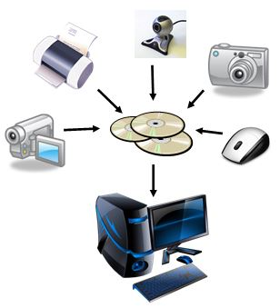

<div id="jsn-maincontent" class="span9 order1 row-fluid">
  <div id="jsn-maincontent_inner">
    <div id="jsn-centercol">
      <div id="jsn-centercol_inner">
        <div id="jsn-mainbody-content" class="jsn-hasmainbody">
          <div id="jsn-mainbody-content-inner1">
            <div id="jsn-mainbody-content-inner2">
              <div id="jsn-mainbody-content-inner3">
                <div id="jsn-mainbody-content-inner4" class="row-fluid">
                  <div id="jsn-mainbody-content-inner" class="span12 order1">
                    <div id="jsn-mainbody">
                      <div id="system-message-container"></div>

                      <div
                        class="item-page"
                        itemscope
                        itemtype="https://schema.org/Article"
                      >
                        <meta itemprop="inLanguage" content="en-GB" />

                        <div itemprop="articleBody">
                          <p></p>
                          <h1 style="text-align: center">Device drivers</h1>

                          <p>
                            Have you ever bought a peripheral (any piece of
                            hardware e.g. a webcam, a camera, a printer) and
                            plugged it into your computer, only for it not to
                            work? There could be a number of reasons, but one of
                            the most common is that your computer doesn't have
                            the right 'driver' for the hardware you plugged in.
                            A driver is a piece of software that allows a
                            particular piece of hardware to talk to the
                            operating system and hardware already on your
                            computer so that it can then work properly in your
                            computer. Without the right driver installed, the
                            hardware will probably not work.
                          </p>
                          <p>
                            Operating systems like Windows come with many
                            drivers already installed. These are known as
                            'generic' drivers, because each one is designed to
                            work with most pieces of equipment. For example, the
                            generic mouse driver in Windows will allow you to
                            plug in almost any mouse and it will just work
                            without you having to do anything! Of course, if you
                            have a special mouse with some extra buttons or
                            features, it may not work at all or may only
                            partially work. If you have bought some amazing new
                            piece of equipment that is really new and cutting
                            edge, it might be that there isn't a generic driver
                            for that piece of equipment yet in your operating
                            system. It could also be the case that you have a
                            piece of equipment that is using an old driver and
                            you need to update it to the latest one for your
                            equipment to work properly.
                          </p>
                          <p>
                            When you plug a peripheral into your computer, your
                            operating system will detect this. It will then
                            check if there is a suitable driver already
                            installed. If it can't find one, or detects that the
                            driver is old, the OS may ask you if you have a disk
                            with a driver that it can use or whether it should
                            look on the Internet for one to download. Once you
                            have the latest driver installed, you can test your
                            hardware to see if it works in the computer.
                            Sometimes, you have to re-boot your computer for the
                            driver to work properly but most of the time, you
                            can just use your plugged-in peripheral.
                          </p>
                          <p></p>
                        </div>
                      </div>
                    </div>
                  </div>
                </div>
              </div>
            </div>
          </div>
        </div>
      </div>
    </div>
  </div>
</div>
